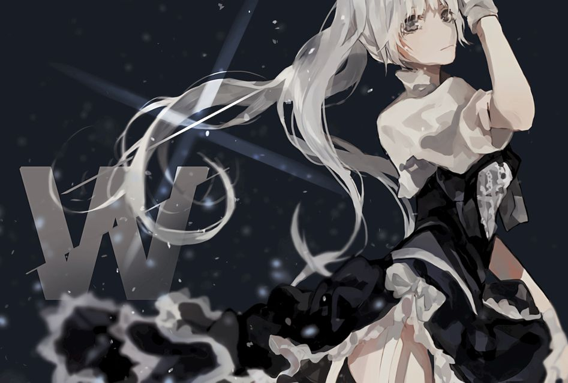
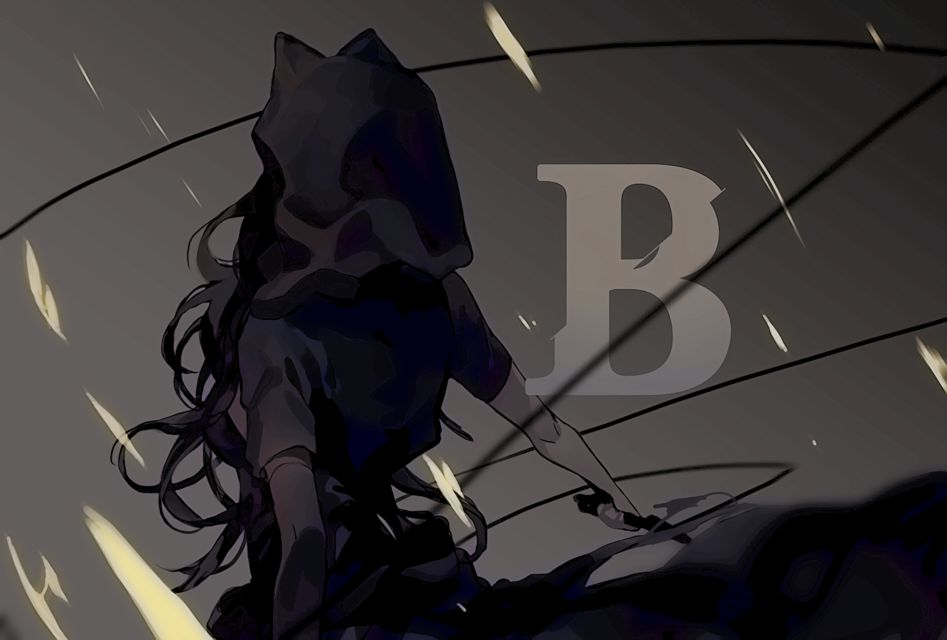
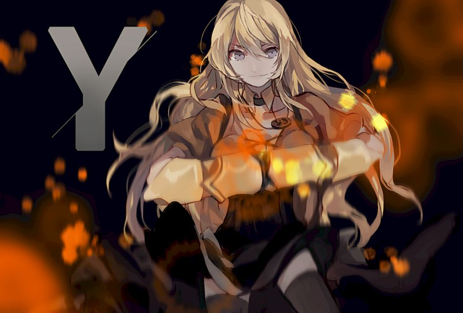

“ As a girl, I wanted to be just like those heroes in the books. Someone who fought for what was right and protected people who couldn't protect themselves! ”
—Ruby, on her motivations for becoming a Huntress

“My father was not the start of our name, and I refuse to let him be the end of it. ” —Weiss, regarding her future

“ With all due respect, you need to start taking some larger strides. Until then, I'd rather avoid any unnecessary attention. I want people to see me for who I am, not what I am. ” —Blake, to Ozpin on keeping her identity a secre

“ I still want to know what happened to my mother and why she left me, but I will never let that search control me. ” —Yang, to Blake Belladonna
“ As a girl, I wanted to be just like those heroes in the books. Someone who fought for what was right and protected people who couldn't protect themselves! ”
—Ruby, on her motivations for becoming a Huntress